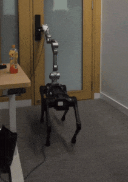
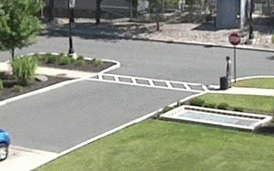

Our research lab, the Precognition Lab (智能感知与预测实验室), is interested in building human-level
Embodied AI systems that can effectively perceive, reason and interact with the real world for the good of humans.
Here is an up-to-date
research roadmap.
Our lab's computing resources include
32 RTX 3090/4090 GPUs and a cluster of 24 A6000 GPUs with a 100TB NAS. See
this post.
And we have multiple mobile platforms with robot arms and dex hands:




Check out our lab's
cool publications and demos.
Our lab has over 10K followers on social media：
[
Rong's 知乎]
[
Yujin's 知乎]
[
Junwei's 知乎]
[
Junwei's 小红书]
[
Junwei's LinkedIn]
* indicates corresponding authors.
Preprint.
-
From Cognition to Precognition: A Future-Aware Framework for Social Navigation
Zeying Gong, Tianshuai Hu, Ronghe Qiu, Junwei Liang*
ArXiv 2024
-
Mitigating the Human-Robot Domain Discrepancy in Visual Pre-training for Robotic Manipulation
Jiaming Zhou, Teli Ma, Kun-Yu Lin, Ronghe Qiu, Zifan Wang, Junwei Liang*
ArXiv 2024
-
Open-vocabulary Mobile Manipulation in Unseen Dynamic Environments with 3D Semantic Maps
Dicong Qiu, Wenzong Ma, Zhenfu Pan, Hui Xiong, Junwei Liang*
ArXiv 2024
-
Contrastive Imitation Learning for Language-guided Multi-Task Robotic Manipulation
Teli Ma, Jiaming Zhou, Zifan Wang, Ronghe Qiu, Junwei Liang*
CoRL 2024
-
Prioritized Semantic Learning for Zero-shot Instance Navigation
Xinyu Sun, Lizhao Liu, Hongyan Zhi, Ronghe Qiu, Junwei Liang*
ECCV 2024
-
Open-Vocabulary 3D Semantic Segmentation with Text-to-Image Diffusion Models
Xiaoyu Zhu, Hao Zhou, Pengfei Xing, Long Zhao, Hao Xu, Junwei Liang, Alexander Hauptmann, Ting Liu, Andrew Gallagher
ECCV 2024
-
An Examination of the Compositionality of Large Generative Vision-Language Models
Teli Ma, Rong Li, Junwei Liang*
NAACL 2024
-
FinTextQA: A Dataset for Long-form Financial Question Answering
Jian Chen, Peilin Zhou, Yining Hua, Yingxin Loh, Kehui Chen, Ziyuan Li, Bing Zhu*, Junwei Liang*
ACL 2024
-
VMRNN: Integrating Vision Mamba and LSTM for Efficient and Accurate Spatiotemporal Forecasting
Yujin Tang, Peijie Dong, Zhenheng Tang, Xiaowen Chu, Junwei Liang*
CVPR 2024 Precognition Workshop
-
PatchMixer: A Patch-Mixing Architecture for Long-Term Time Series Forecasting
Zeying Gong, Yujin Tang, Junwei Liang*
IJCAI 2024 Workshop: DATA SCIENCE MEETS OPTIMISATION
-
PostRainBench: A comprehensive benchmark and a new model for precipitation forecasting
Yujin Tang, Jiaming Zhou, Xiang Pan, Zeying Gong, Junwei Liang*
ICLR 2024 Workshop: Tackling Climate Change with Machine Learning
(Spotlight paper)
-
TFNet: Exploiting Temporal Cues for Fast and Accurate LiDAR Semantic Segmentation
Rong Li, ShiJie Li, Xieyuanli Chen, Teli Ma, Wang Hao, Juergen Gall, Junwei Liang*
CVPR 2024 Workshop on Autonomous Driving
-
STMT: A Spatial-Temporal Mesh Transformer for MoCap-Based Action Recognition
Xiaoyu Zhu, Po-Yao Huang,
Junwei Liang, Celso M de Melo, Alexander G Hauptmann
CVPR 2023
-
Multi-dataset Training of Transformers for Robust Action Recognition
Junwei Liang, Enwei Zhang, Jun Zhang, Chunhua Shen
-
The Garden of Forking Paths: Towards Multi-Future Trajectory Prediction
Junwei Liang, Lu Jiang, Kevin Murphy, Ting Yu, Alexander Hauptmann
CVPR 2020
-

Peeking into the Future: Predicting Future Person Activities and Locations in Videos
Junwei Liang, Lu Jiang, Juan Carlos Niebles, Alexander Hauptmann, Li Fei-Fei
CVPR 2019 (Translated and reported by multiple Chinese media (量子位 & 机器之心, 02/13/2019), with 30k+ views in a week.)
#1 Tensorflow-based code on PaperWithCode in Trajectory Prediction task.